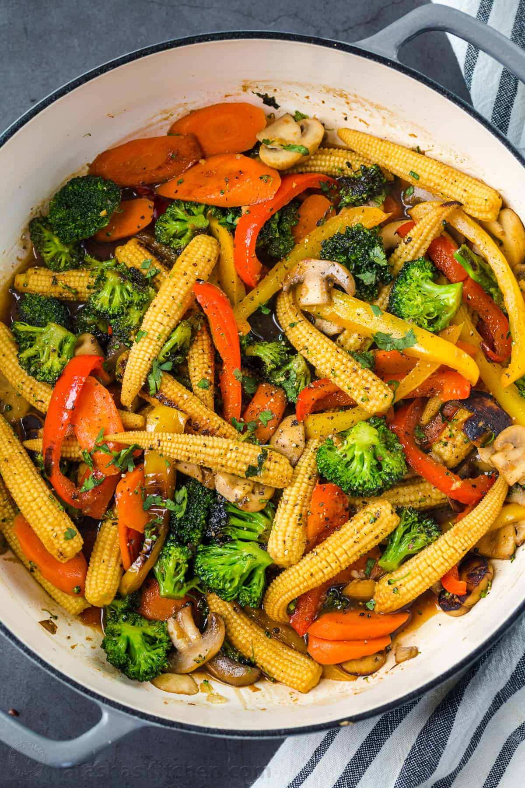

Vegetable Stir-Fry

Description
Vegetable Stir-Fry is a colorful mix of veggies cooked quickly in a savory sauce, making it both delicious and nutritious. This dish is a staple in Asian cuisine, offering a balance of crunchy textures and bold flavors. It can be enjoyed on its own or served over steamed rice or noodles.
Ingredients:
- 2 tbsp vegetable oil (or sesame oil for more flavor)
- 1 small onion, sliced
- 2-3 garlic cloves, minced
- 1-inch piece of ginger, grated
- 1 red bell pepper, sliced
- 1 cup broccoli florets
- 1 medium carrot, julienned or thinly sliced
- 1 cup snap peas or green beans
- 1/2 cup mushrooms, sliced (optional)
- 2 tbsp soy sauce
- 1 tbsp oyster sauce (or hoisin sauce for a vegetarian option)
- 1 tsp sesame oil
- 1 tsp cornstarch dissolved in 2 tbsp water (for thickening)
- 1 tsp sugar (optional)
- Sesame seeds
- Chopped green onions
Steps:
- Prepare the Sauce:In a small bowl, mix soy sauce, oyster sauce, sesame oil, cornstarch slurry, and sugar. Set aside.
- Cook the Vegetables:Heat the vegetable oil in a large skillet or wok over medium-high heat. Add the garlic, ginger, and onion, and sauté for 1-2 minutes until fragrant.
- Add the broccoli, carrots, and bell peppers. Stir-fry for 3-4 minutes, keeping the veggies crisp and colorful.
- Add the snap peas, mushrooms, or any other quick-cooking vegetables. Stir-fry for another 2-3 minutes.
- Add the Sauce:Pour the prepared sauce over the vegetables and toss to coat evenly. Cook for 1-2 minutes until the sauce thickens slightly.
- TServe:ransfer to a serving dish and garnish with sesame seeds or chopped green onions. Serve hot with steamed rice or noodles.